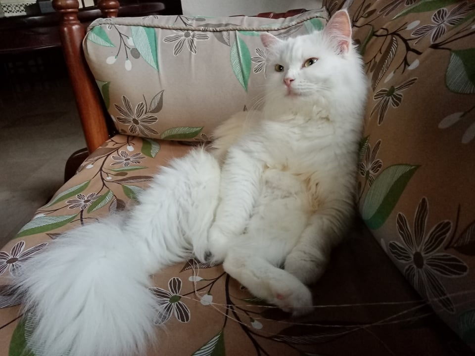

Biology as the Study of Life
Biology is, simply put, the science of life. It is composed of the Latin "bios," meaning "life"; and "logos," meaning "study." It encompasses the history existing and extinct species; their structures; interactions; and functions. Below are the agreements biologists have as to the definition of a living thing.
TheFelis catusfalls under living thing, as in the figure.
Living Things
- Organization
Life is essentially classfied as such: organelles, cells, tissues, organs, organ system, organism, population, community, ecosystem, biosphere.
Biology may be split into:
- Reductionist approach - study of details
- Systems biology - study of broader picture
A scientist once found in a study that the stems of bananas make epoxy more effective. This is an example of reductionist approach because emphasis was put on banana stems in particular rather than an entire banana.
- Information
- For example, cells, the basic unit of life, are made up of chromosomes, which contain deoxyribonucleic acid (DNA), consisting of Adenine, Guanine, Cytosine, and Thymine.
- DNA concerns function and is not isolated; while RNA is located in different nucleotide bases and concerns transportation.
- Genomes refer to complete genes; proteomes refer to complete protein
- Energy and Matter
- Interactions
- Symbiotic Relationships
- parasitism
- mutualism
- commensalism
- Evolution
Energy is one of the main characteristics in living things. Plants, for example, are autotrophs and produce their own food through photosynthesis.
Refers to gradual changes in a population as a form of survival.
"Nothing in biology makes sense except in the light of evolution" - Theodosius Dobzhansky